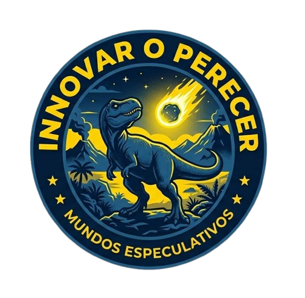

MUNDOS
ESPECULATIVOS

FACULTAD DE HUMANIDADES Y ARTES
FILOSOFÍA GENERAL 0900

FACULTAD DE HUMANIDADES Y ARTES
FILOSOFÍA GENERAL 0900
| Hora | Actividad |
|---|---|
| Fase de Inicio | |
| 09:10 AM - 09:14 AM | Bienvenida oficial |
| 09:16 AM - 09:22 AM | Introducción al tema central |
| Bloque de Exposición | |
| 09:24 AM - 09:44 AM | Pedagogía de Educación Sentipensante |
| 09:46 AM - 10:06 AM | Ciudades Inteligentes |
| 10:08 AM - 10:13 AM | Presentación de video |
| 10:15 AM - 10:35 AM | Crecer o sobrevivir |
| 10:37 AM - 10:57 AM | Sociedad Algorítmica |
| Fase de Cierre | |
| 10:59 AM - 11:39 AM | Plenaria |
| 11:41 AM - 11:45 AM | Conclusión |
| 11:47 AM - 12:02 PM | Refrigerio |

Se propone una transición hacia el modelo Sentipensante de Orlando Fals Borda, donde se busca superar la fragmentación entre la razón y el corazón. Este enfoque pedagógico plantea la formación de individuos íntegros capaces de utilizar el rigor científico sin desligarse de la sensibilidad humana y social.
Unificación de los procesos intelectuales con la inteligencia emocional en el aula.
Pedagogía orientada hacia la formación de sujetos activos comprometidos con su entorno.

Se propone una reconfiguración Ética para la ciudad de Comayagua ya que los problemas de la movilidad urbana en la actualidad causa segregación y contamina; nuestra propuesta busca democratizar el espacio público. No se trata solo de construir ciclovías, sino de aplicar una ética donde el derecho a la ciudad sea una extensión de la responsabilidad hacia las generaciones futuras y el medio ambiente, en línea con Henri Lefebvre en El derecho a la ciudad, quien plantea que los ciudadanos deben participar en la transformación de su ciudad.
Reconfiguración enfocada en reducir la segregación y la contaminación urbana en Comayagua.
Participación ciudadana activa para transformar el entorno siguiendo la visión de Lefebvre.
Se analiza la crisis ecológica como consecuencia de una racionalidad económica que busca el crecimiento ilimitado. Basándose en Kohei Saito, se expone la incompatibilidad entre el capital y los límites biológicos del planeta, sugiriendo que la supervivencia depende de recuperar la gestión de los bienes comunes.
Contradicciones entre la acumulación de capital y la regeneración de los ecosistemas.
Reflexión sobre vías sociales compatibles con la biosfera y la supervivencia colectiva.

Se investiga el impacto de los sistemas automatizados en la desensibilización digital de la Generación Z. Se profundiza en el "Filtro Burbuja" de Eli Pariser y la apatía algorítmica que satura el juicio crítico.
Cómo la mediación tecnológica distorsiona la percepción de la realidad social.
Fortalecimiento del juicio humano frente a la automatización del pensamiento y el Big Data.